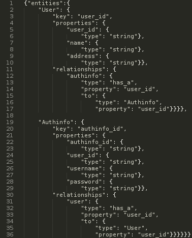
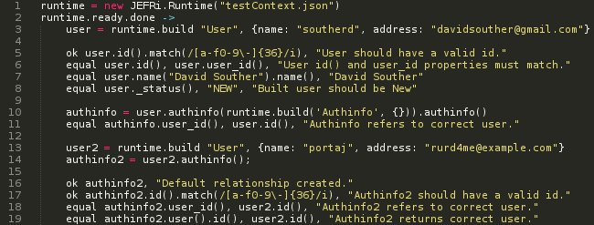
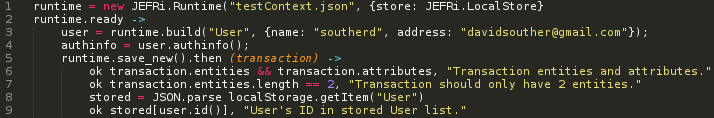
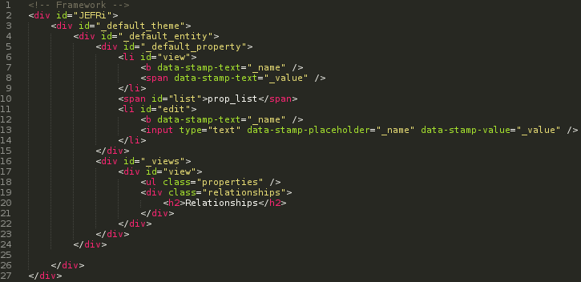
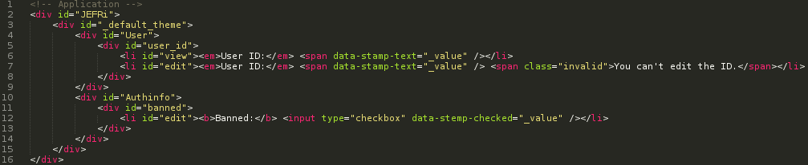
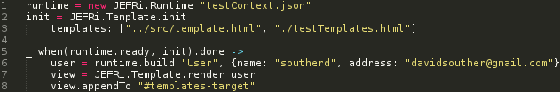
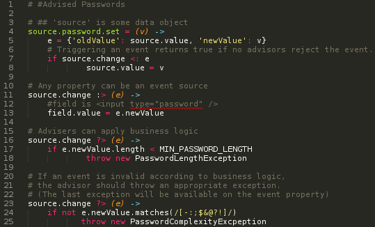
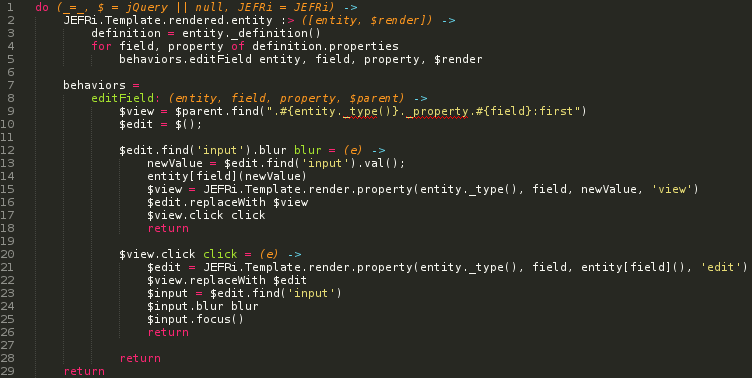

David Souther
Hello, and thank you for attending this presentation.
The Model-View-Controller architecture for GUI applications has shown its versatility time and again since its first use in the smalltalk environment.
The proliferation of MVC frameworks speaks to this power, and the variations of Model-View-ViewModel and Model-View-Presenter show the flexibility of the fundamental approach.
Even with the tremendous success of the Model-View frameworks and approaches, there are unexplored techniques in the ecosystem.
Constrained MVC
Over the next hour, we will explore what can happen, and what support frameworks can provide, when we make several constraints on a business' data Model.
In this exploration, we will create an effective distributed data handling platform, a templating and scaffolding system that provides significant clarity over contemporary alternatives, and an innovative eventing library which offers an expanded vocabulary when considering the observer pattern.
JEFRi: Entity Framework Runtime
The ideas are built out using JEFRi, an Entity Framework platform. The code samples will be in Coffeescript with some small additions when we speak about advisors, but the ideas, framework specification, and framework API could be implemented in any language.
Entities
The foundation of this focused approach to MVC is in an entity.
An entity is an object built from a specific, shareable definition of the properties and relationships of the data an application is modeling.
An entity framework, like JEFRi, is a framework built specifically around this concept of an application's data storage.
Entity-Relation Models

An application using an entity framework starts by building a Entity Relationship Diagram.
While many application lifecycles will have some documentation of the entity model at some point, possibly driving database design around an ERD, JEFRi applications use the description of the entity model at its core.
Contexts
We use this entity relationship model to build an entity context.
The entity context provides the entity runtime all the information needed to build and use this data model for a business.
Let's look at a context definition.
Context

Here represented as a JSON object, let's walk through this basic user authentication system.
The entity context starts here with a single property, "entities".
Each key in this object is the name of an entity type our application will have available, and the value is the definition.
Our two entities are "User" holding the basic, commonly-accessed user information that will be needed often in our application.
The other entity is the "Authinfo", which has details specifically concerning checking the user's login credentials.
Each entity has a couple properties.
In this example, everything is a string, but more types are available to frameworks.
There are also relationships here. Each user has a single authinfo, and each authinfo is attached to a particular user.
The relationship definitions provide a few details, including how the relationship will be accessed in the application code, and how related entities will be found at runtime.
Let's look at some code that uses this context.
Usage

This code is pulled from some of JEFRi's unit tests.
It starts by loading the context into a new runtime. This will be the main access point for all our data management, including entity creation and data storage.
Loading the context is an asynchronous task, so here we hook into a deferred chain.
When the context is ready, we build our first User. Once we have a user, we can look at what's provided by the Runtime.
First, we have a call to the ID accessor.
This is a default method provided by the runtime, so entities can store their identifying data anywhere needed, and applications can find their address without needing to look at the definition first.
Next, we have the user_id accessor.
The runtime here provides an overloaded getter/setter pattern; if no value is provided, it returns the current value.
Otherwise, it updates the entity, and returns a reference to the entity.
There are a few provided utility methods available on entities.
To avoid naming collisions, they are prefixed with an underscore, except for id.
_status specifically returns an enumeration stating the data persistence state, describing if the entity has been persisted to some other JEFRi runtime.
Relationships behave exactly like properties, except using entity references instead of primitive values.
Notice in the second part of the example, the runtime can create a default instance of an entity if the relationship is called, but no entity is loaded.
Persistence

I mentioned runtimes handle persistence.
In this example, we see JEFRi using an HTML5 LocalStore utility to save the new data in the user's browser.
By changing the store the runtime uses, we can get local SQL storage, remote REST storage, or a myriad other possibilities.
Let's take a look at what we've got here.
With entities, we are trading the unconstrained possibilities of a loose data model for the more precise entity relationship definition.
In practice, many applications already use a data model that fits these constraints.
The increased expressivity of using a runtime built around such a definition provides a powerful tool for developers using this data.
Further, because the runtime knows so much about the data, it can provide an incredible amount of plumbing that other frameworks require the application developer to write.
This includes data validation, data persistence, and distributed method calls, all in a neatly packaged yet interoperable system.
For more details, the full JEFRi runtime documentation is available at docs.jefri.org
Parallels
This view of entities as the fundamental business model has many parallels to current data handling strategies.
ORMs
Entities with relationships and properties are very similar to current active record patterns.
Instances of entities generally map to a row in a database table, with columns holding property values.
The increased power comes in the single, well-defined entity context.
With that context describing the data, the relational database becomes just another projection of the entity data.
Document Storage
In flight, entity data is usually represented as a JSON string.
While it is then expanded to an in-memory instance when received by a runtime, viewing entities as documents in a document storage system is a very apt view.
The power again comes from having a single defined entity context.
With that context, Entities become type-definitions on top of document storage.
Frameworks can make very smart decisions about the data they store.
Are there any questions about entities at this point?
Templating
We can now use this concept of entities to build a templating system that makes a number of assumptions about the data model, providing a wealth of opportunities to build a robust underlying framework.
This templating engine is called DataStamp, and clones pieces of a DOM template based on the data it's rendering.
It works on the assumption that our application has entities, each with properties and relationships, and will render appropriately.


These are two templates that will get loaded at runtime.
When DataStamp loads them, it merges new nodes from the later templates into the original template, so we'll end with a dom node that's not rendered on the page, but has three nodes at the _default_entity level.
Render

Rendering the view is straightforward: pass the data object to the data-stamp, let it choose the correct view, and attach the returned DOM node where needed.
[Jump to render tests tab]
Here, you can see the rendered object.
Keeping Data-Stamp a purely DOM approach has its benefits and its drawbacks.
There is a significant amount of discussion comparing string concatenation techniques against direct DOM manipulation.
I fall into the DOM manipulation camp.
The ease of reading just DOM, and the ability to render the template without applying any data is, I find, a more valuable asset for developing against today's browsers than concerns about raw performance.
Are there any questions about DataStamp, or how it ties to entities?
Mountainous Interlude

Observers, meet Advisors
Observers
- Decouple dependencies
- Invert control flow
- Events, publish/subscribe
Advisors
- All advisors run before any observer
- Advisors can:
- change events
- stop events
- suppress known observers

Behaviors

This is a behavior to add in-line editing functionality to any property.
By including this on our page, it watches for any properties that get rendered.
As they get rendered, the appropriate events are watched, and
JEFRi: EATs Adderall
to cure MVC
Thanks
Jonathan Porta, Chuck Lowery, Justin Grant
[[Click through]]
If you have any questions, feel free to email or IM me.
Thank you for your time :)
Are there any final questions?
Use spacebar, arrow keys, or click to navigate. Press 'n' for speaker notes.